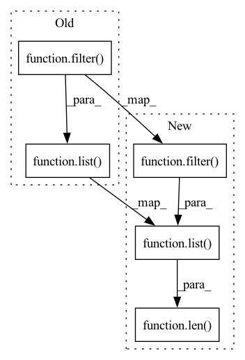

Pattern ID :6198
Before Change
layer_name = checkpoint["training_ta_layers"][i]
args.append(DistillationArgs(layer_name, new_layer, layer_name))
if i == 0 and list( filter( lambda x: x.requires_grad, self.model.parameters())) == 0:
self.logger.debug("Creating new optimizer...")
self.optimizer = checkpoint["config"].init_obj("optimizer", optim_module, new_layer.parameters)
else:After Change
layer_name = checkpoint["training_ta_layers"][i]
args.append(DistillationArgs(layer_name, new_layer, layer_name))
if i == 0 and len( list( filter( lambda x: x.requires_grad, self.model.parameters()))) == 0:
self.logger.debug("Creating new optimizer...")
self.optimizer = checkpoint["config"].init_obj("optimizer", optim_module, new_layer.parameters())
else:In pattern: SUPERPATTERN
Frequency: 3
Non-data size: 5
Instances Fragment ID: 21336781
Project Name: lehduong/knowledge-distillation-by-replacing-cheap-conv
Commit Name: 5801e0eddf6f1c2b355516ea893202b54f1bd667
Time: 2020-02-21
Author: oopsxilitol@gmail.com
File Name: trainer/takdp_trainer.py
M Class Name: TAKDPTrainer
N Class Name: TAKDPTrainer
M Method Name: _resume_checkpoint(2)
N Method Name: _resume_checkpoint(2)
M Parent Class: KDPTrainer
N Parent Class: KDPTrainer
M File Name: trainer/takdp_trainer.py
N File Name: trainer/takdp_trainer.py
M Start Line: 136
M End Line: 144
N Start Line: 136
N End Line: 144
Before Change
// add new parameters to optimizer
// if start pruning this epoch and model doesn"t have any trainable paramters i.e. just have been \
// promoted to TA then create new optimizer
if i == 0 and list( filter( lambda x: x.requires_grad, self.model.parameters())) == 0:
self.logger.debug("Creating new optimizer...")
self.optimizer = self.config.init_obj("optimizer", optim_module, new_layer.parameters)
for param_group in self.optimizer.param_groups:After Change
// add new parameters to optimizer
// if start pruning this epoch and model doesn"t have any trainable paramters i.e. just have been \
// promoted to TA then create new optimizer
if i == 0 and len( list( filter( lambda x: x.requires_grad, self.model.parameters()))) == 0:
self.logger.debug("Creating new optimizer...")
self.optimizer = self.config.init_obj("optimizer", optim_module, new_layer.parameters())
for param_group in self.optimizer.param_groups: Fragment ID: 21336780
Project Name: lehduong/knowledge-distillation-by-replacing-cheap-conv
Commit Name: 35b6c4eabcb8b328b5553546ae1c99eed48f41c2
Time: 2020-02-20
Author: oopsxilitol@gmail.com
File Name: trainer/kdp_trainer.py
M Class Name: KDPTrainer
N Class Name: KDPTrainer
M Method Name: prune(2)
N Method Name: prune(2)
M Parent Class: KnowledgeDistillationTrainer
N Parent Class: KnowledgeDistillationTrainer
M File Name: trainer/kdp_trainer.py
N File Name: trainer/kdp_trainer.py
M Start Line: 49
M End Line: 63
N Start Line: 49
N End Line: 63
Before Change
def get_output_from_stack(stack_name: str, output_key: str) -> str:
stack = boto3.resource("cloudformation").Stack(stack_name)
output_value = list( filter( lambda d: d["OutputKey"] == output_key, stack.outputs)) [0][
"OutputValue"
] // type: str
return output_valueAfter Change
stack = boto3.resource("cloudformation").Stack(stack_name)
if stack.outputs is None:
return None
outputs = list( filter( lambda d: d.get("OutputKey", None) == output_key, stack.outputs))
if len( outputs) < 1:
return None
return outputs[0].get("OutputValue", None)
Fragment ID: 21336782
Project Name: determined-ai/determined
Commit Name: d33b2202c8b9b60ccd52415e64f594572fa459f1
Time: 2023-04-05
Author: 12127420+hamidzr@users.noreply.github.com
File Name: .circleci/scripts/get_output_from_stack.py
M Class Name: AnonimousClass
N Class Name: AnonimousClass
M Method Name: get_output_from_stack(2)
N Method Name: get_output_from_stack(2)
M Parent Class:
N Parent Class:
M File Name: .circleci/scripts/get_output_from_stack.py
N File Name: .circleci/scripts/get_output_from_stack.py
M Start Line: 8
M End Line: 11
N Start Line: 8
N End Line: 14